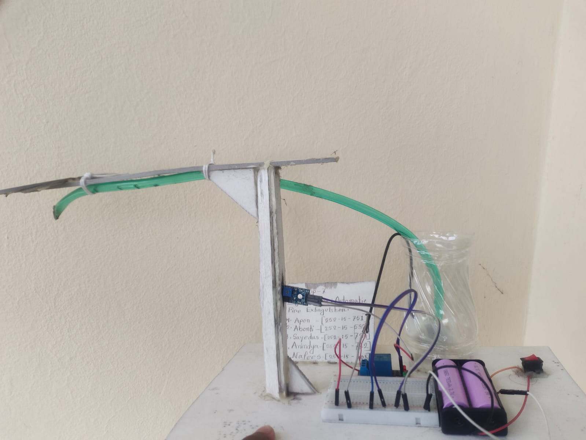

🔥
Automatic Fire Extinguisher
Electronics & Safety Engineering Project
Project Demo • Prototype
Automatic Fire Extinguisher
This project is a prototype automatic fire-safety system. The hardware setup shown here is designed around a sensor-triggered mechanism that can detect a fire-related condition and activate an extinguishing mechanism.
ArduinoC / C++ElectronicsSafety Automation
DetectionSensor-based fire-condition detection concept.
AutomationAutomatic trigger path for the response mechanism.
HardwarePrototype wiring, controller and actuator setup.
GoalFast automated response to a detected fire condition.
● Prototype demonstration — the uploaded project photo is displayed above.